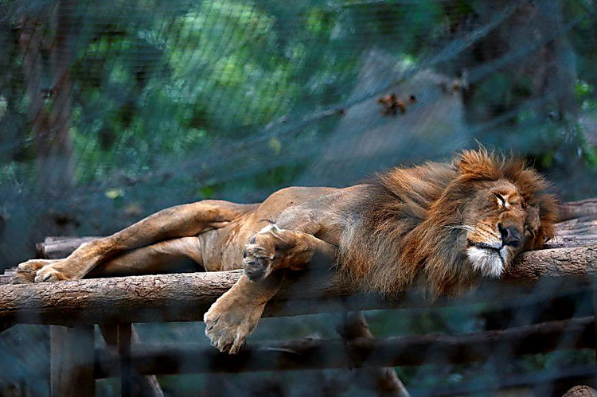

Xush kelibsiz, Virtual Zooparkga!
Bu yerda siz turli hayvonlarni haqida qiziqarli maulomotlar topishingiz mumkin.
Bizning hayvonlar
- Arslonlar - o'rmon qirollari
- Fillar - yer yuzidagi eng katta quruqlik hayvonlari
Hayvonlar haqida qiziqarli faktlar

Hayvonlarni ko'rish
Sevimli hayvoningiz qaysi
Arslon
Fil
Hayvonlar haqida to'liq ma'lumot
| hayvon |
Qiziqarli fakt |
| Arslon |
Arslonlar kunning 20 soatini uyqu bilan o'tkazishadi |
| Fil |
Fillar suvni o'zlarini burni bilan ichishadi |